As we discussed in previous chapters, the simple perceptron can only solve linear problems . Whether it be a classification problem or a regression problem the process has to be close to linear model.
I forgot that we did not discuss about the regression models earlier. I quickly cover that too in this chapter, albeit our main discussion point is MLP. If you have not read the previous chapter please have a look that will help you to understand this blog more easily 🔖
Regression Problem
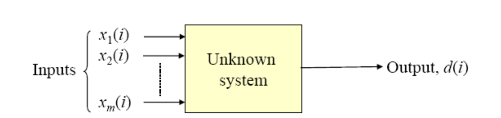 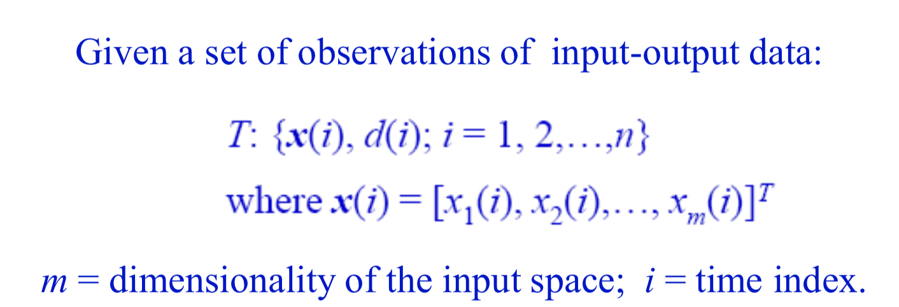 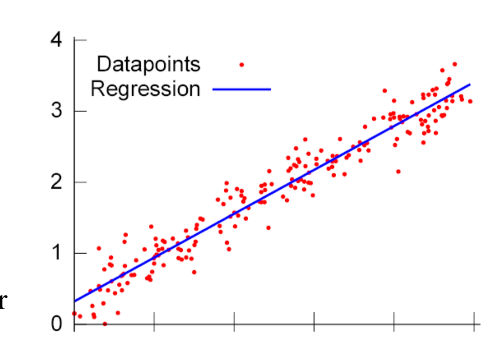What are we trying to do here? Unlike classification problems here there is no final classes and the final outputs are continuous. Each time when we calculate expected value we have to check how close are to the atual value, that measure is known as clost function.
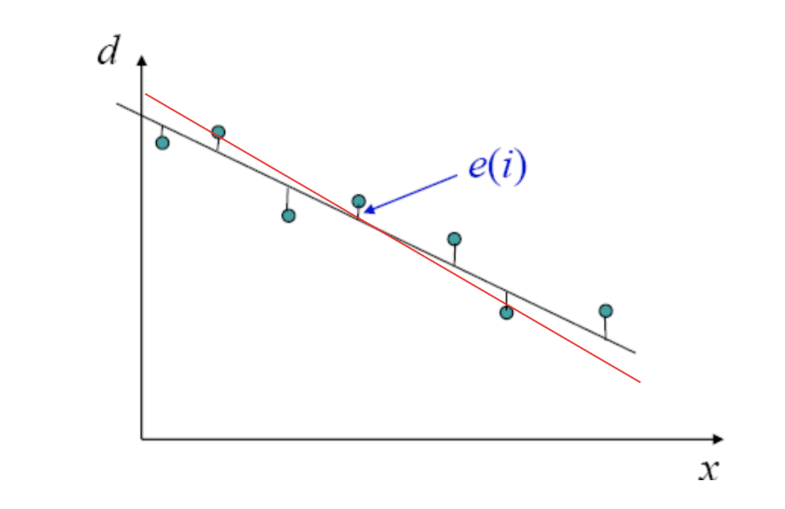 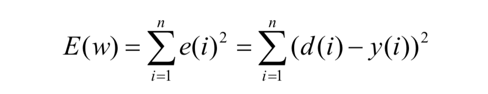The idea is to reduce the cost function to zero, or the partial derivative of the cost function with respect to weights should be zero ( ideally, the error will remain zero and the weights will reach to a constant value after certain iterations )
For simple models we can directly solve the partial derivatives and for bigger problems it will not be the case. Then comes the Iterative descent algorithms, where we will do some initial guesses for the w(0) and change the weights in different iterations and will make sure that the new weights being calculated has a lesser cost value than the previous one.
One of the known descent algorithm is Steepest Descent / Gradient Descent where successive adjustment applied to the weight vector w are in the direction of the steepest descent ( a direction opposite to the gradient vector ∇ E(w) )
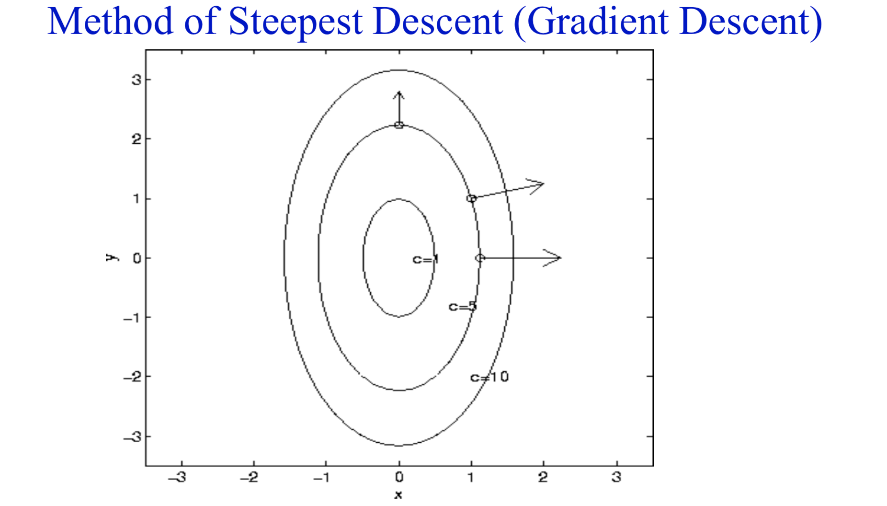 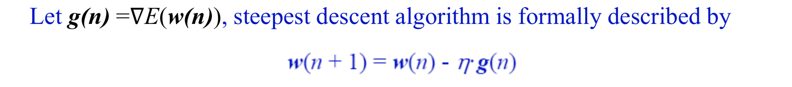Here the η is a positive constant called the stepsize of learning rate, there is a condition such that the value of η should be sufficiently small to make the algorithm work.
And for the error calculation we can use Least mean square or a linear least square ( LMS requires much less memory space and can be updated with new data easily)
To address why are we using the squared versions rather than the absolute value function because, absolute values are not smooth , the reason we are calculating there in the first place is to get the minimum of this function right? So if we have a smooth graph it will help us to achieve that
There is a interesting maths part ( proof on selecting the cost function and how exactly the descent algorithms are working ect) for regression part. I am not include those if you are interested in those things please let me know. We can look into that as well 👻
So coming back to our actual discussion.. Now we know regardless of whether it is a classification problem or a regression problem inorder to address that using a single perceptron the problem statement needs to be linear ( sinusoid functions won’t work here)
Minsky has attacked the accountability of perceptron because of the same reason but Rosenblatt could not answer it because he got killed in a boat accident 😢
After 17 years David Rumelhart introduced if we connect multiple perceptron we can address even non linear problems statement
He obtained his B.A. in psychology and mathematics in 1963 at the University of South Dakota. He received his Ph. D. in mathematical psychology at Stanford University in 1967. From 1967 to 1987 he served on the faculty of the Department of Psychology at the University of California, San Diego.The PDP group was led by David Rumelhart and Jay McClelland at UCSD. They became dissatisfied with symbol-processing machines, and embarked on a more ambitious “connectionist” program.
As we know XOR was the attacking question against the single perceptron. David showed that when we connect multiple layers the input space transformed into another space (y1,y2) such that they become linearly separable.
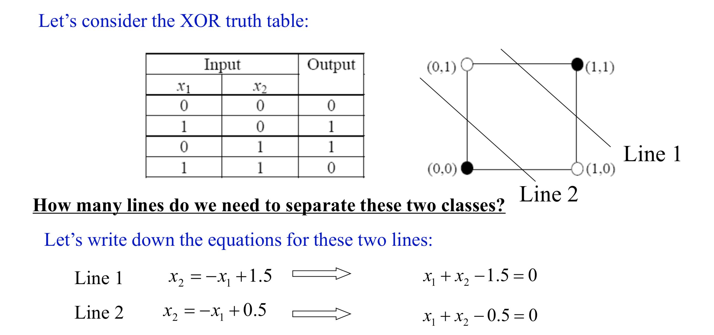From the given two lines we can construct two perceptrons for two seperate decision boundaries
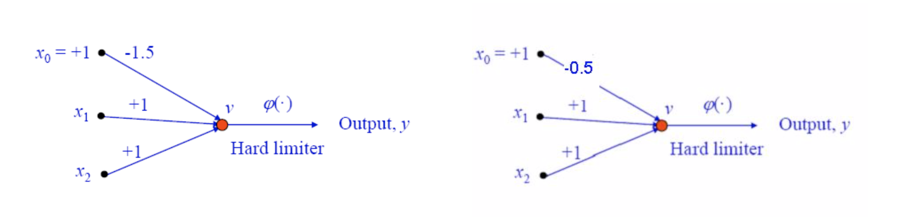Assume what would happen if we combine these two perceptrons together
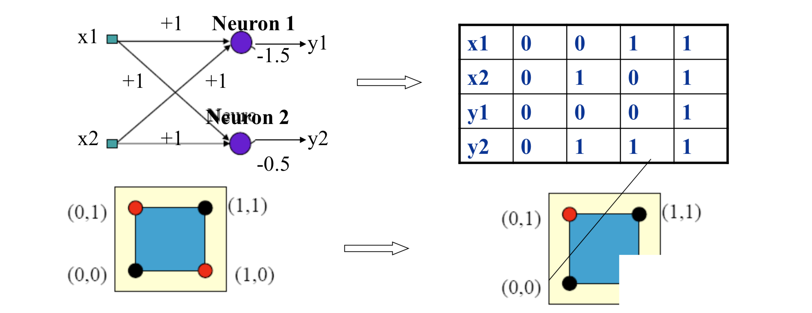 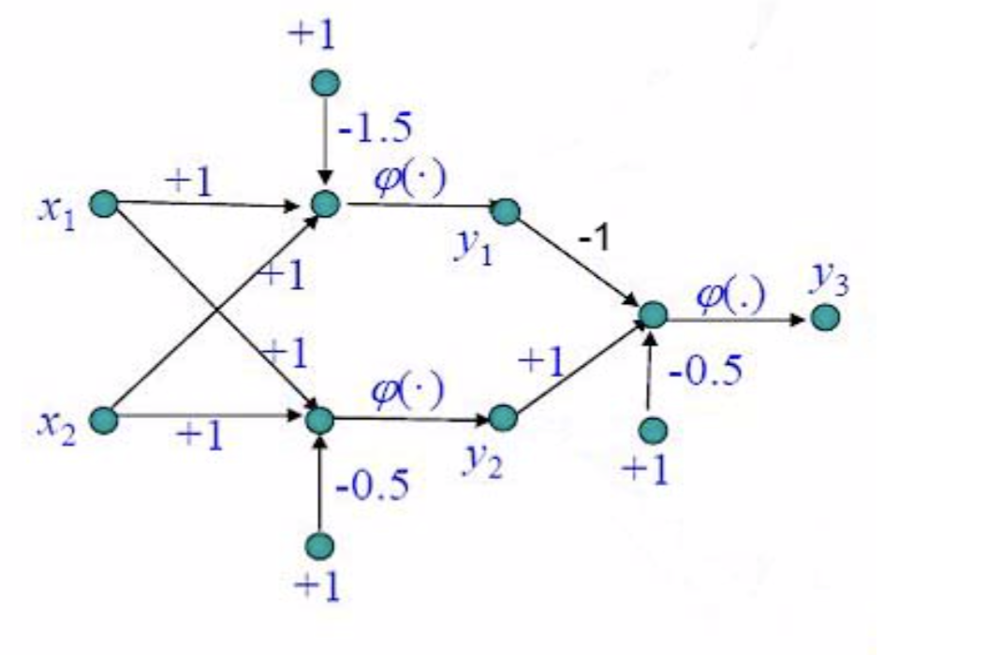See how easily we addressed the XOR problem. If we can address this non-linearity multilayer perceptrons can address even more complicated functions.
How do they learn then? There is an algorithm called Back propagation algorithm which was a break through in the research of NN and we will discuss more about those in coming chapters